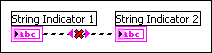

Indicators are front panel objects that display output. Data flows from data inputs to data outputs, or indicators. You can wire one data input to many data outputs, but there must be at least one control connected to a wire. Connecting all the end points of a wire to outputs results in an error.
You can correct this error in the following ways: